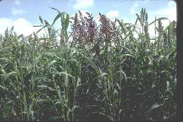

|
ECONOMICALLY
IMPORTANT PLANTS OF INDIA |
| Under-utilized Food and Fodder species and their wild relatives | Contributed by Ms.M.L Annapurna And Dr. Dhanapal, UAS, Bangalore |
Echinochloa frumentecea (Roxb.) Link

Taxonomic
Details
----- Correct Name
----- Classification
----- Synonyms
----- Common Names
Other Biological Details
----- Habit and Habitat
----- Diagnostic Features
----- Reproductive Biology
---------- Breeding System
---------- Phenology
---------- Pollinators
---------- Seed Biology
---------- Seed Germination
----------Cultivation
----- Major Pests and Diseases
Economic Potential and Uses
----- Parts Used
-----Uses
----- Harvesting Practices
----- Produce and Products
----- Chemistry
----- Processing Techniques
----- Other uses
----- Economic Potential to the
Country
----- Export Potential
Miscellaneous Information
Literature
Correct
Name :Echinochloa
frumentecea (Roxb.) Link
Family : Gramineae
Synonyms : Echinochloa colona var frumentacea,
Echinochloa colonum var frumentacea, Panicum crusgalli var grumentaceum,
,Panicum stagninum var frumentacea. Panicum frumentaceum (Roxb.),
Echinochloa crus-galli frumentacea ((Link.)W.Wight.)
Common Names :
English: Japanese Barnyard Millet,
Tamil:
Marati: Barti, Sawan, Shamula,Shamule
HABIT
& HABITAT
Echinochloa
colona var. frumentacea is the cultivated type which is closely related to the
wild E. colona, a common weed of the paddy fields and wet areas. The related
species are E. crus-galli Beauv. (In = 48) and £. stagnina Beauv. (In =-- 54).
£. crus-galli is an annual found in rice fields and wet areas. The rains of
this species are also used. E. stagnina is a perennial growing in wet places,
partly submerged in water; this species has a small ligule as fringe of hairs in
the leaf.
BioticZone: Konkan plain, Tropics and West Coast,
Misc: Adari, Cargao, deogad, Kalasgiri hill, Kushalgarh, Mahaballeshwar, Mahan,
malwan, mumbri, Nuvem hills, Pilegaon, Bicholim, Raigad, Roha, Salempur,
Shivthalgad, Sindhudurg, tar, Tatani and Varandh ghat.
Country:
Zone: Central,South and West zone.
State:
District: Agra, Ahmadnagar, Akola, Amaravati, Balaghat, Banswara, Chandrapur,
Chengalpattu, Coimbatore, Dhule, Goa, Gulbarga, Indore, Jalgaon, Nagpur, Nasik,
Palni hills, Pune, Raigad, Ratnagiri North, Rudraprayag, Salem, Satara,
Sindhudurg, Thane, Tirunelveli, Udaipur,
Talluk: Marmugoa, Okhimath, Pernem, Satari and sawantwadi.
Availability :
Status :
DIAGNOSTIC
FEATURES
Annual,
growing upto 0.75 metres in height, tillering sparsely; stem slender, leaves
flat, glabrous or slightly hairy; ligule absent
REPRODUCTIVE
BIOLOGY
Inflorescence
a panicle, contracted or pyramidal, spikes many, thickened, with densely crowded
unawned spikelets; spikelets densely packed in three to five rows, turgid;
glumes two; lemma 51 broadly oblong or orbicular, palcate, fertile with
hermaphrodite flower; stamens three; ovary superior, two styles and plumose
stigmas; fruit a caryopsis enclosed within the lemma II and palea
Breeding System
:Self pollinated crop
Phenology :
The flowering occurs during
July-October and the seeds ripen from September to October and also there are
reports of flowering during
October-March.
Pollinators:
It is pollinated by Wind.
Seed Biology :
Seed Germination :
Seed - sow early spring in a greenhouse and only just cover the seed. When they
are large enough to handle, prick the seedlings out into individual pots and
plant them out into their permanent positions in early summer.A sowing in situ in late
spring might also succeed but is unlikely to ripen a crop of seed if the summer
is cool and wet.
Cultivation :
The plant prefers light (sandy), medium (loamy) and heavy (clay) soils and
requires well-drained soil. The plant prefers acid, neutral and basic (alkaline)
soils. It cannot grow in the shade. It requires moist soil. The plant can
tolerate strong winds but not maritime exposure.
Pests:
Diseases:
Parts used
Forage purposes,Live stock feed, some are weeds, Seed.
2.Seed
- cooked and used as a millet. The seed can be cooked whole or can be ground
into a flour. Usually eaten as porridge. The seed contains about 72.5%
starch, 3.12% fat, 11.8% protein, 2.65% ash.
Harvesting
Practices
Chemistry
The edible portion of the plant known to contain 82 mg of Magnesium,
0.6 mg. of Copper, 0.96 mg. of Manganese, 3.0 mg.
of Zinc and 0.09 mg of Chromium for every
100 gm of material.
Web References:
1. Data. (uses, distribution, wetland) from the UDSA's plants database.
2. Data (Latin & Common names, other references) from the BONAP's Synonymized Checklist of the Vascular Flora of the United States, Puerto Rico, and the Virgin Islands.
3. Data (Common Names, Uses, Distribution) from the USDA/ARS NPGS's GRIN taxonomic database.
4. Data. (uses, distribution, wetland) from the UDSA's plants database.
5. Ethnobotany Data (common names, uses, countries) from the Ethnobotany Database (sadly ftp only. The searchable web pages have been pulled).
7.
See the PFAF Links
Pages for other sources or the The Gatherer where you can search many other
sources all in one go.